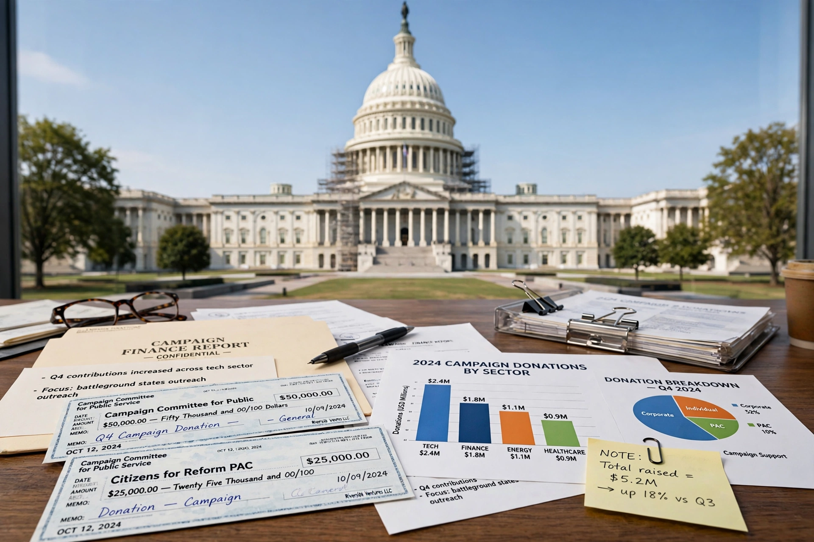

| Campaign finance in the United States | |
| Regulator | Federal Election Commission (FEC) |
|---|---|
| Key laws | Federal Election Campaign Act (1971/1974); Bipartisan Campaign Reform Act (2002) |
| Landmark cases | Buckley v. Valeo (1976); Citizens United v. FEC (2010); McCutcheon v. FEC (2014) |
| Key actors | Candidates, parties, PACs, Super PACs, 501(c)(4) groups |

Campaign finance in the United States is the financing of electoral campaigns at the federal, state, and local levels, and one of the most contested areas of American law. At the federal level it is governed by the Federal Election Campaign Act (FECA) and enforced by the Federal Election Commission. The system rests on an uneasy balance between limiting corruption and protecting political spending as speech under the First Amendment.
Early regulation included the Tillman Act (1907), which banned corporate contributions to federal candidates. After the Watergate scandal revealed widespread abuses, Congress amended FECA in 1974 to impose contribution limits, disclosure requirements, expenditure limits, and public financing of presidential campaigns, and to create the FEC. In Buckley v. Valeo (1976), the Supreme Court upheld contribution limits and disclosure but struck down limits on campaign expenditures and on candidates' spending of personal funds, reasoning that spending money on speech is itself speech.
Contributions given directly to candidates ("hard money") are capped and disclosed. "Soft money" — unlimited donations to parties for ostensibly non-campaign purposes — grew into a major loophole until the Bipartisan Campaign Reform Act (McCain–Feingold, 2002) banned it and restricted electioneering communications. Spending then migrated to outside groups: political action committees (PACs), and after Citizens United v. FEC (2010) and SpeechNow.org v. FEC, "Super PACs," which may raise unlimited sums from individuals, corporations, and unions for independent expenditures but may not coordinate with candidates. Tax-exempt 501(c)(4) "social welfare" organizations can spend on politics without disclosing donors, giving rise to concerns about "dark money."
Presidential candidates were eligible for public funds from 1976; major nominees accepted general-election grants until Barack Obama opted out in 2008, after which the system's funding proved uncompetitive and it fell into disuse. Some states and cities — including New York City and, since 2022, Seattle's "democracy vouchers" — operate their own public financing programs intended to amplify small donations.
Total spending on U.S. federal elections has reached into the tens of billions of dollars per cycle. Reform advocates argue large donors and outside groups distort representation; opponents of regulation argue that limits entrench incumbents and restrict speech, and that disclosure, rather than caps, is the constitutional remedy.